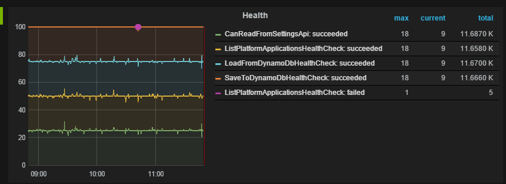

How do you KNOW your code is working RIGHT NOW in production?
@petemounce
@justeat_tech
Any questions?
Shout them out as we go. That's more fun.
Why test? #2
Make things more predictable
Recap: Some testing practises
Tests should...
fail for a single reason
... or at least fail for an obvious reason
give confidence to ship
point you at problems fast
Tests are green, deploy all the things!
Who runs their tests against production?
What don't you test?
(Even if you do run tests in production)
8 fallacies of distributed computing
- The network is reliable
- Latency is zero
- Bandwidth is infinite
- The network is secure
- Topology doesn't change
- There is one administrator
- Transport cost is zero
- The network is homogeneous
Production is not under source control
It contains people as well as code
Too many variables
"Production-ready" is not binary, but shades of on-fire
History: JUST EAT didn't get here in a day.
Transforming from constantly on-fire to constantly deploying took time
Ops lament: "What's changed?!"
How do you stay in production?
Write different test coverage!
Run it in production!
Test in production
Turns out this isn't so insane
Checks & alerts
Checks are operators' tests
Alerts are what happen when checks fail
Minimise surprises. Buy time to think
Neutral or better
http operation timings
http response sizes
event-processing timings
queue lengths
error counts
error rates
Make your application whine
JE.EmbeddedChecks
github:justeat/JE.EmbeddedChecks
- Host tests inside your app (IoC)
- Run them via an http endpoint
- Trigger them often/continuously
- Publish pass/fail/timing stats, per named test, to monitoring
- Wrap a check around pass/fail
Bonus: onboard new people quicker
Show us some code!
public class CanReadFromSettingsApi : HealthCheckBase
{
private readonly HttpClient _client;
public CanReadFromSettingsApi(IConfigureService config, Logger logger)
: base(logger)
{
Name = "CanReadFromSettingsApi";
_client = new HttpClient() { BaseAddress = config.SettingsApi };
}
protected override bool Run(HealthCheckResult result)
{
var response = _client.GetAsync("/contract.json").Result;
return response.IsSuccessStatusCode;
}
}
// load-balancer endpoint kicks off test-run
Get["/health"] = p => {
var free = FreeHealthChecks(_container);
var t1 = new Task(() => RunHealthChecks(free, monitor));
t1.Start();
return string.Empty;
};
// separately-accessible endpoint for immediate feedback
Get["/health/checks/all"] = p => {
var allHealthChecks = AllHealthChecks(_container);
var results = RunHealthChecks(allHealthChecks, monitor);
var response = Response.AsJson(results);
if (results.Any(x => !x.IsHealthy)) {
response.StatusCode = HttpStatusCode.BadGateway;
}
return response;
};
Sample seyren/graphite check
movingAverage
(
sumSeries
(
stats.timers.my-feature.uk.*.health.*.failed.*.*.count
),
1
)
2nd * is the test-name. We scream on any failure.
The alert is pointless unless
The person receiving it knows what to do now.
Sample chart on a dashboard

Green == healthy == boring == good night's sleep
Testing in production isn't so scary
Functional testing in production isn't so scary
x-traffic-type header.
Enable environment-agnostic tests
Embed stubbed / predictable responses in your distributed applications
What have we gained?
Faster feedback at deploy-time
What have we gained?
Continuous assertion of dependencies' health
What have we gained?
Continuous assertion of functional health
What have we gained?
Faster feedback cycles and less overhead
Online takeaway. Harder than you might think
We've got around 50 open spots for talented engineers, if you're interested.
tech.just-eat.com/jobs